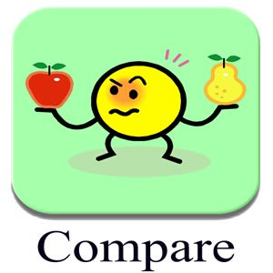
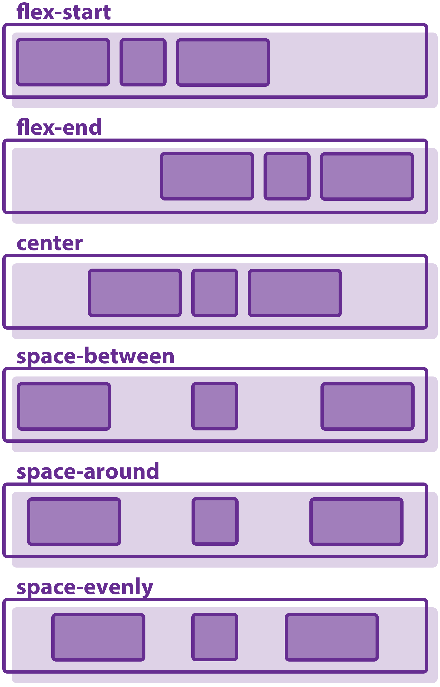
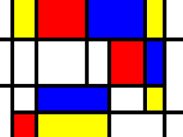
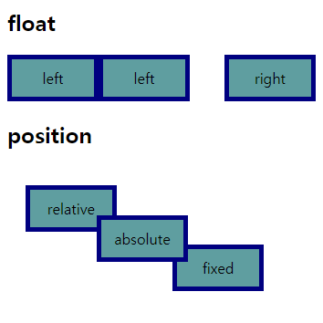

Gannon's Home Page!
Gannon's Heading Page

This is just a page with a simple project I worked on dealing with how to make headers for a web page.
Gannon's Top 10
This is all of my top ten favorite things around, some of it you may agree with or some of it you may not agree with. In the end, it is my top ten.
Gannon's Bio Page

If you want to know a little more about me, then this is the page for you. This is an about me page dealing with some just minor facts people can know about me.
Gannon's Exercise 1 Page

This was just a quick little demonstration of how I was able to put what I know about web design into a little assignment. It's not the best, but it sure is a start.
Exercise 2A
Just a quick page of how to properly use floats, ids, classes, block, inline, and clearfix.
Exercise 2
A page showing how I was able to take what I know into creating a page using the elements from exercise 2a.
Comparison

A page of me taking two things, and in this case Nike v. Adidas, and seperating them into two different columns to both compare and contrast them.
Review 3
This is a page of me showing the skills I have learned in class of spliting things up into columns and being able to properly space out all the info while also learning how to change font design.
Flexbox Examples

this is a page that shows and demonstrates how the different types of flexboxes work including those that belong to the justify content section, align items section, and the flex wrap section.
Mondrian Art

This is just a page showing off my ability to use div tags with columns and dividers to be able to create a form of mondrian art with the skills I have learned.
Floats

This is my page and work on using floats to create two sections, one section that is equal in column length and size and the other that creates another version but in unequal proportions.
Review 3a
This was another review page based off the third review page that shows how I have used block, inline, and floates to make a good page along with new fonts and font sizes.